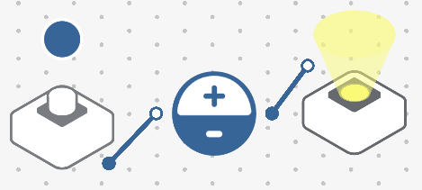

Carte: Sam Labs¶
Pairer en bluetooth: https://youtu.be/htgxcF5wTes https://studio.samlabs.com/
Qu’est-ce que Sam Labs ?¶
Sam Labs est un outil permettant d’apprendre les bases de la programmation en créant un circuit logique entre différents blocs ayant chacun une tâche précise.
Les blocs sont en deux catégories:
- Entrés:
Bouton
Capteur de lumière
Curseur
Gyroscope
Proximité
- Sorties:
LED RVB
Moteur DC
Sonette
Servo-moteur
Fonctionnement¶
La connection¶
Les blocs sont connectés entre eux par bluetooth, une interface sur ordinateur appelé Samlabs Studio permet d’établir les connections.
Note
L’ordinateur doit avoir une connection bluetooth.
Après chaque branchement virtuel, les blocs Samlabs réagissent instantannément, il n’y a pas de compilation à effectuer. On peut aussi utiliser des blocs virtuels pour effectuer les tests puis utiliser ceux connectés en bluetooth.
Voici par exemple le branchement du bouton pour allumer une LED avec deux blocs virtuel:

On peut virtuellement appuyer sur le bouton en cliquant sur le cercle bleu au-dessus du bloc, on voit que le LED s’allume en jaune:

Certains blocs de sortie et noeuds logique (montré plus bas) sont parfois réglables, il faut cliquer dessus puis sur l’icône de l’engrenage. Pour le LED on peut changer sa couleur:

Pour supprimer un bloc on le fait glisser en bas de l’interface en maintenant le bouton gauche enfoncé où on le sélectionne puis clic sur la croix.
Les systèmes logiques¶
On peut entre la connectique des blocs ajouter des conditions logiques. Par exemple avec une logique « inverser » la LED s’allume lorsque le bouton n’est pas pressé:
Un autre exemple, on peut allumer une lumière si la luminosité est faible en utilisant un capteur de lumière et une condition si la valeur est inférieure à un nombre définie puis le connecter à la LED RVB.
Note: La condition envoie un vraie (1) ou faux (0) donc va allumer la lumière à sa luminosité maximale ou complètement l’éteindre.
Module de LEGO et voiture¶
On peut mettre les blocs dans des modules de LEGO et ainsi les fixer dans des constructions LEGO. Un exemple de réalisation.
On peut utiliser l’un des deux modules de voiture pour y fixer deux blocs DC Moteur sur chacun avec des roues et programmer les commandes de celles-ci.
Compatibilité¶
Le système est compatible avec les Micro:bit mais seulement en mode blocks (fonctionnement proche de Scratch). On peut par exemple utiliser le bouton du SamLabs pour afficher un message sur la Micro:bit.
Projets¶
La documentation donne des idées de projets avec le Steam kit, mais ils sont rédigés en anglais. Il y a des projets inspirants sur YouTube également avec les compétitions.